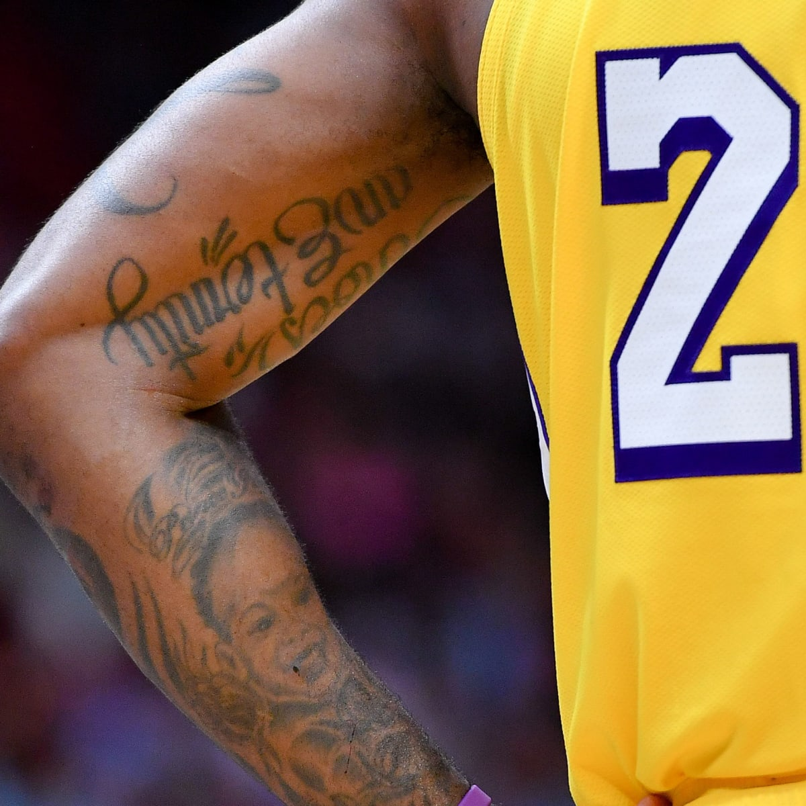

What is being digitized? How is the information represented digitally? |
What is the goal or purpose of digitizing this thing? |
|---|---|
|
The tattoos of professional NBA players are being digitized in the game series NBA 2K by the company Take-Two Interactive. This information is being represented digitally through the avatars with in the NBA 2K games upon whom Take-Two have put the designated players tattoos. Source: si.com |
The purpose of digitizing this tattoo for the game company Take-Two is that they want to create the game NBA 2K with as much realism as possible for the players to enjoy. The concept of the game is that it is a real recreation of the players in the NBA all the way down to the select tattoos on their avatars. Source: hoopshype.com |
What are the benefits and harms of digitizing this content? |
Is our world better or worse because of digital representation? |
|---|---|
|
The benefits of digitizing this content is that it allows others to be creative, such as the game company Take-Two who want to digitize tattoos to really immerse players as much as possible, but with that comes the cost of tattoo artists art being used more and more without their permission or any money gained from the actual tattoo artist who made the art. Source: educationthatinspires.ca |
Overall, I feel that the world as a whole is much better because of digital representation since it allows for so many innovations to take place that humans even a few decades ago could not fathom the idea of and it really allows people to work off the backs of one another for the benefit of all. This of course does come at the cost of having a weird zone of what's actually allowed to be digitally represented. Source: hoopshype.com |